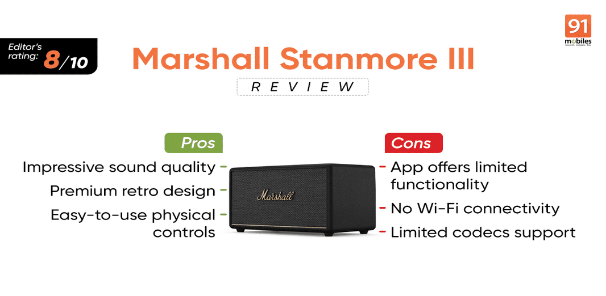

The Stanmore III is Marshall’s mid-range speaker, designed for home use due to its size and absence of a battery. The speaker sits between the company’s Acton III and flagship Woburn III (review) speakers, which differentiate themselves in terms of sound output. The Marshall Stanmore III hits the sweet note of 50W, which is loud enough for small backyard or terrace gatherings. But how does the sound quality hold up, and is it worth its original price of Rs 41,999—discounted to Rs 34,999 for the festive season? Read this Marshall Stanmore III review to find out.
Sharing its design with the Woburn III, the Marshall Stanmore III boasts a retro look with a boxy form factor, faux leather finish, and a contrasting mesh at the front. It’s available in three colours: black, brown, and cream. We received the black variant for review, and it looks exceptionally classy. Premium details, like the iconic Marshall logo across the centre and a thin brass-coloured line along the base of the front panel, further elevate its design. The brass colour extends to the wide, pill-shaped control panel on the middle of the top edge, which is recessed into the surrounding enclosure to safely house the physical buttons.
While there is no IP rating, the speaker looks sturdy with no creek or flex when pressure is applied. The Stanmore III weighs 4.25kg and measures 41.2cm in dimensions, which shouldn’t pose a hassle for most to move it around where the party is. Supporting that weight are four rubber feet. However, placing the speaker on a glass surface which rattles, may not be ideal for the Stanmore III sound. The back of the device, which also has a port for the power cable (there is no battery), looks busy with all sorts of text, from copyright info to warnings, FCC certification, and more, etched on it.
Before diving into the sound quality, let’s first explore the specifications and features of the Marshall Stanmore III. It delivers a frequency range of 45Hz to 20KHz, driven by a 5-inch woofer powered by a 50W class-D amplifier, along with two 0.75-inch tweeters, each backed by 15W class-D amplifiers. The speaker supports Bluetooth v5.2 for wireless connectivity and also offers wired options, including a 3.5mm AUX input and RCA. For the price, we wished the speaker also had Wi-Fi connectivity for direct music streaming. Moreover, the Marshall Stanmore III only supports SBC codec, which lacks the richness and clarity of the more advanced AAC and AptX codecs.
The speaker has built-in controls for almost everything. Besides the power on/ off switch on the brass panel on the top edge, you will find buttons to change tracks, knobs to adjust volume, bass, and treble, a Source button to switch between connectivity modes, and a 3.5mm aux input. The RCA input ports are on the back of the speaker. Some controls have dimly lit LED lights next to them to know their status so that you don’t have to check the app.
Yes, there is an app for Stanmore III on both Android and iOS. While it is pretty simple to use, the app doesn’t offer any additional functionality apart from ‘Placement Compensation’. The feature adjusts the sound to compensate for any nearby surfaces that could affect the audio experience. However, the difference is very subtle. That said, a sound profile section allowing users to save customised EQ settings within the app would have been highly appreciated.
Note: I was on the v3.2.9 of the Marshall app on my iPhone 14 Plus.
The Marshall Stanmore III delivers impressive sound quality, getting surprisingly loud for its size while maintaining clarity even at full volume. Its balanced sound will appeal to both purists and bass lovers. However, if you’re looking for a speaker to liven up a party, you may want to consider other options. At maximum volume, the Stanmore III’s bass loses its sharpness and can start to sound muddy. I personally had the best listening experience with the bass set at 6-7 and the treble at 8 on the speaker. This added clarity and airiness to the sound without overpowering the vocals. I was still able to enjoy the beats at low frequencies of not only my go-to Punjabi and Bollywood tracks such as Chhaiya Chhaiya, GOAT, Obsessed, Sajjan Razi, and Pretty Woman, but also international tracks including Bye Bye Bye, Fein, Godzilla, Sunflower, Night Changes, and more.
The speaker delivered on every track I played. Though it’s not built like a party speaker, the Stanmore III still made my heart race with the heavy bass of Travis Scott’s ‘Fein.’ Besides this, the speaker excelled at delivering Chhaiya Chhaiya, Night Changes, Bye Bye Bye, and other such songs with exceptional quality with each element distinctly standing out, allowing the nuances of the music to shine through, whether it was the rhythmic percussion, smooth vocal harmonies, or intricate instrumental layers.
That’s been our experience with the Marshall Stanmore III. The speaker impresses with its balanced sound, stylish retro design, and robust build quality, making it ideal for home use. The Stanmore III delivers excellent clarity and punchy bass at moderate volumes, appealing to audiophiles and casual listeners alike. However, for its asking price, you do expect the speaker to offer better features such as support for Wi-Fi connectivity and a smart assistant, which are available with similarly-priced speakers such as JBL Authentic 300 and Sonos Five S24.
Be that as it may, Stanmore III’s overall performance, especially for small gatherings or personal listening, makes it a worthwhile investment—especially with the festive season discount.